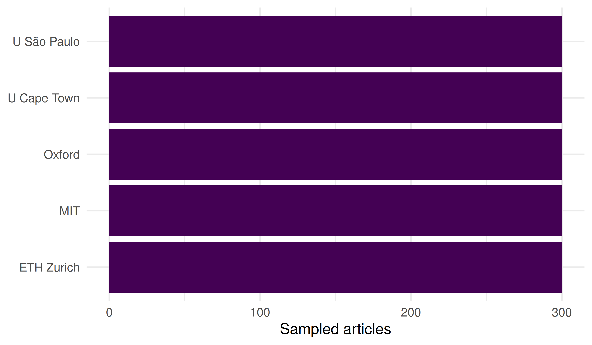
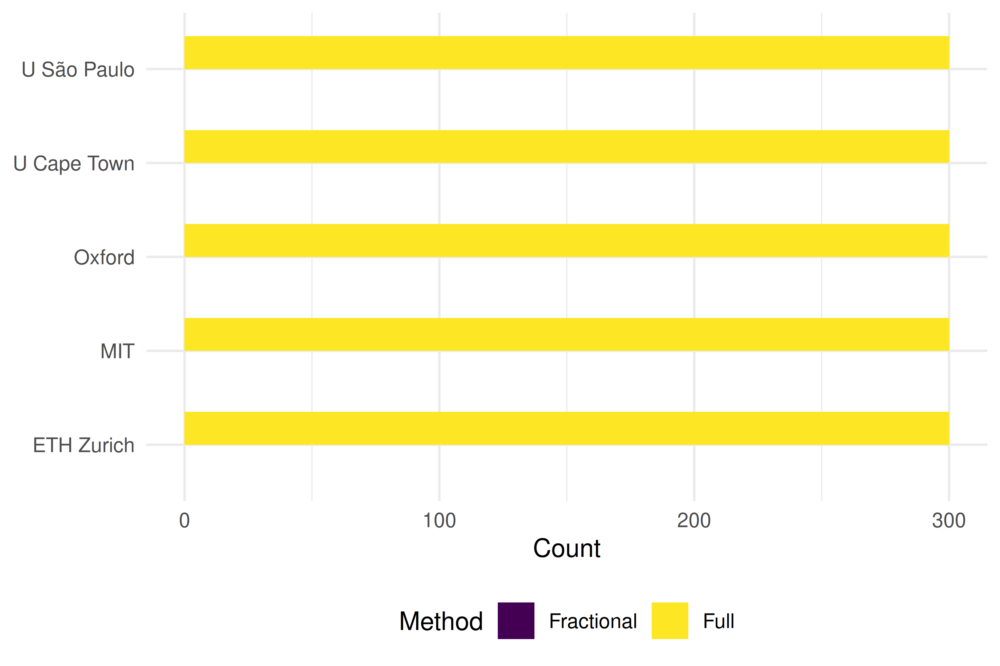
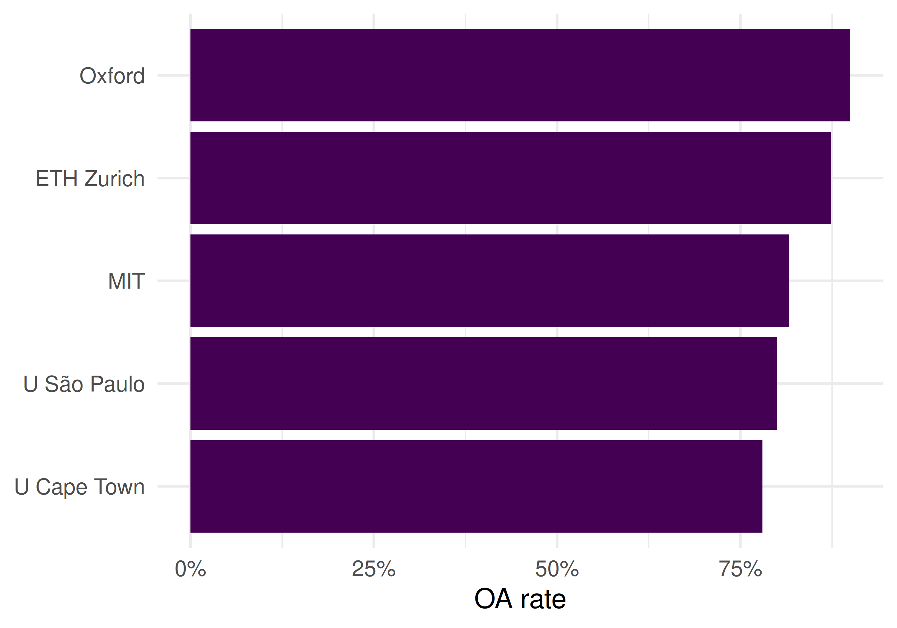

39 Case Study 2: Institutional Benchmarking
R. Heller · Date: 2026-05-09 · Last changed: 2026-10-31
39.1 Objective
Compare citation summaries, fractional credits and open-access metadata in capped publication samples from five universities. These descriptive samples do not measure total productivity or field-normalised impact.
39.3 Data acquisition
Institution IDs were checked against OpenAlex on 30 October 2026, including the University of São Paulo record. Each request retrieves at most 300 articles; these are samples, not output totals. A failed or empty request stops the comparison instead of silently dropping an institution.
institutions <- tribble(
~short_name, ~oa_id,
"MIT", "I63966007",
"Oxford", "I40120149",
"ETH Zurich", "I35440088",
"U São Paulo", "I17974374",
"U Cape Town", "I157614274"
)
fetch_works <- function(inst_id) {
res <- fetch_openalex(
entity = "works",
authorships.institutions.id = inst_id,
from_publication_date = "2020-01-01",
to_publication_date = "2022-12-31",
type = "article",
options = list(sample = 300, seed = 42)
)
if (!is.data.frame(res) || !nrow(res)) {
stop(glue("No usable works returned for {inst_id}; check the request."))
}
res
}
inst_data <- institutions |>
mutate(works = map(oa_id, fetch_works))39.4 Publication volume
inst_data |>
mutate(n = map_int(works, nrow)) |>
ggplot(aes(x = n, y = reorder(short_name, n))) +
geom_col(fill = palette_sci(1)) +
labs(x = "Sampled articles", y = NULL) +
theme_sci()
Figure 39.1: Sampled publication counts by institution.
39.5 Citation summaries
As in Chapter 13, the citation ratio uses a common year reference from the union of the five samples, de-duplicated by work ID. It adjusts for year only, not field mix or a common citation window. Missing citation counts and undefined ratios are excluded with their usable denominators shown.
citation_reference <- sci_pooled_year_reference(inst_data$works)
impact <- inst_data |>
mutate(summary = map(works, sci_sample_citation_summary,
reference = citation_reference)) |>
unnest(summary) |>
select(short_name, n_sampled, n_citation_observed, mean_cites,
median_cites, n_ratio_observed, pooled_year_ratio) |>
arrange(short_name)
impact |>
gt() |>
fmt_number(columns = c(mean_cites, median_cites, pooled_year_ratio), decimals = 2)| short_name | n_sampled | n_citation_observed | mean_cites | median_cites | n_ratio_observed | pooled_year_ratio |
|---|---|---|---|---|---|---|
| ETH Zurich | 300 | 300 | 52.02 | 23.00 | 300 | 1.43 |
| MIT | 300 | 300 | 51.59 | 25.00 | 300 | 1.40 |
| Oxford | 300 | 300 | 39.69 | 15.00 | 300 | 1.08 |
| U Cape Town | 300 | 300 | 29.54 | 12.00 | 300 | 0.77 |
| U São Paulo | 300 | 300 | 13.22 | 6.00 | 300 | 0.36 |
39.6 Full vs. fractional counting
Count each distinct affiliation once per work and divide its credit equally. Incomplete affiliations make the fractional total unavailable; the coverage column shows how many sampled works have usable data. This is bibliometric credit, not an estimate of each institution’s contribution.
counting <- inst_data |>
mutate(counts = map2(works, oa_id, sci_institution_sample_counts)) |>
unnest(counts) |>
select(short_name, full_count, affiliation_covered, frac_count) |>
mutate(ratio = round(frac_count / full_count, 2))
counting |> gt()| short_name | full_count | affiliation_covered | frac_count | ratio |
|---|---|---|---|---|
| MIT | 300 | 251 | NA | NA |
| Oxford | 300 | 263 | NA | NA |
| ETH Zurich | 300 | 271 | NA | NA |
| U São Paulo | 300 | 258 | NA | NA |
| U Cape Town | 300 | 255 | NA | NA |
counting |>
pivot_longer(c(full_count, frac_count), names_to = "method", values_to = "count") |>
mutate(method = recode(method, full_count = "Full", frac_count = "Fractional")) |>
ggplot(aes(x = count, y = reorder(short_name, count), fill = method)) +
geom_col(position = "dodge", width = 0.7) +
scale_fill_manual(values = palette_sci(2)) +
labs(x = "Count", y = NULL, fill = "Method") +
theme_sci()
Figure 39.2: Full and fractional credits within the retrieved samples.
39.7 OA rates
inst_data |>
mutate(oa_rate = map_dbl(works, \(w) mean(w$oa_status != "closed", na.rm = TRUE))) |>
ggplot(aes(x = oa_rate, y = reorder(short_name, oa_rate))) +
geom_col(fill = palette_sci(1)) +
scale_x_continuous(labels = scales::percent) +
labs(x = "OA rate", y = NULL) +
theme_sci()
Figure 39.3: Open-access share among sampled articles with observed OA status.
39.8 Reading the results
- Sample size: Counts are capped by the request and cannot rank institutional productivity.
- Citation summaries: Means and pooled sample/year ratios describe the retrieved records. Neither is field-normalised; an h-index would also depend on sample size and is omitted here.
- Fractional credit: A lower fractional/full ratio means less credit is retained under this equal-institution counting rule, subject to complete affiliation coverage. It does not by itself rank the average affiliation count or collaboration quality.
- OA metadata: Differences in observed OA shares do not establish the effects of national mandates or institutional policies.
- No single ranking: Report coverage, sample design and indicator definitions alongside any comparison (Hicks et al. 2015).
39.9 Lessons learned
- Treat these outputs as illustrative sampled comparisons, not population rankings.
- Field mix and differing citation windows confound comparisons.
- Responsible benchmarking requires a justified reference set, transparent counting rules, missing-data coverage and uncertainty analysis.